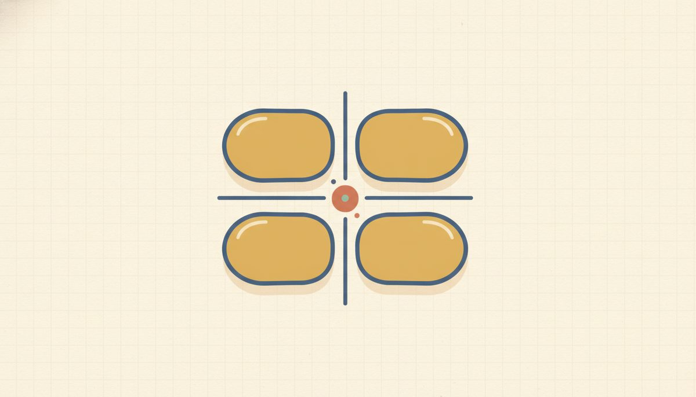

Two-way tables

Some data isn't a number at all; it's a label. "Owns a pet?" is yes or no; "lives in an apartment or a house?" is one or the other. Data sorted into groups like this is categorical, and when you have two such labels for each person, a two-way table is the clean way to see how they interact.
The gold cell is the busy corner. Comparing down the columns (within each place):
$$\text{apartment}:\ \frac{6}{20}=0.30=30\% \qquad \text{house}:\ \frac{24}{30}=0.80=80\%$$80% of house-dwellers have a pet versus 30% in apartments, so where you live and owning a pet are associated.
Picture a survey of 50 people, each answering both questions. Every person falls into one of four buckets: pet-and-apartment, pet-and-house, no-pet-and-apartment, no-pet-and-house. A two-way table is just a grid with one bucket per inner cell.
Lay it out as a grid with the totals written along the edges, and a useful check comes for free: the row totals and the column totals both have to add up to the same grand total. If they don't, a cell got misread.
Reading the table is two moves. A count you read straight off a cell: how many people are in that bucket. A relative frequency turns a count into a fraction or percent of some total. The one thing to get right is which total you divide by, because that changes with the question. "What share of everyone owns a pet?" divides by the grand total. "Of the apartment dwellers, what share owns a pet?" divides by the apartment column's total, a rate within one group. Same cell sometimes, different denominator, different question.
That second kind, a rate within one group, is a conditional relative frequency, and it's the one that answers the real question a two-way table is for: does one category go with the other? You answer it by comparing the conditional rate across groups. If apartment dwellers own pets at a clearly different rate than house dwellers do, then where you live and owning a pet are associated. If the two rates come out about equal, there's little or no association. That's the same idea as the positive/negative association from the scatter plots in A.2, now told with counts instead of dots.
New words
- A.3.d1 Categorical data: data sorted into groups/labels (yes/no, apartment/house), not measured numbers.
- A.3.d2 Two-way table: a grid with one category across the rows and another across the columns; each inner cell holds a count.
- A.3.d3 Row total / column total (marginals): the sum across a row or down a column. The corner grand total is everyone.
- A.3.d4 Relative frequency: a count expressed as a fraction or percent of a total, count/total. Which total you divide by depends on the question:
- Joint relative frequency: a single cell over the grand total (e.g. "owns a pet and lives in an apartment, out of everyone").
- Conditional relative frequency: a cell over its row or column total, i.e. a rate within one group (e.g. "of the apartment dwellers, the share who own a pet"). These are the ones you compare to detect association.
- A.3.d5 Association (for two categories): two categorical variables are associated when a conditional relative frequency differs across groups. For example, if the pet-ownership rate among apartment dwellers is clearly different from the rate among house dwellers, then where you live and owning a pet are associated. If those rates are about equal, there's little or no association. (This is the categorical-data echo of A.2's positive/negative association for scatter plots.)
Here's the survey laid out, with 50 people sorted by whether they own a pet (rows) and whether they live in an apartment (columns):
A.3.w1 $$\begin{array}{c|c|c|c} & \text{Apartment} & \text{House} & \textbf{Total} \\ \hline \text{Pet: Yes} & 6 & 24 & \mathbf{30} \\ \hline \text{Pet: No} & 14 & 6 & \mathbf{20} \\ \hline \textbf{Total} & \mathbf{20} & \mathbf{30} & \mathbf{50} \end{array}$$
Read the single worked example below slowly. It walks every move on this one table, from totals to the association question.
Worked example
Working the pet/apartment table above. The row totals add across: Pet-Yes is 6+24 = 30, and Pet-No is 14+6 = 20. The column totals add down: Apartment is 6+14 = 20, and House is 24+6 = 30. The grand total is 30+20 = 50, and the columns check it: 20+30 = 50 as well.
To read a count, go straight to a cell: the people who own a pet and live in an apartment number 6, the top-left cell. For a joint relative frequency (a share of everyone), the fraction who own a pet is 30/50 = 3/5 = 60%. For a conditional relative frequency (a rate within one group), of the 20 apartment dwellers, the fraction who own a pet is 6/20 = 3/10 = 30%. Notice that the total you divide by changed with the question: the grand total 50 for "of everyone," the column total 20 for "of the apartment dwellers."
A.3.w2 Now the question the table is really for: does owning a pet go with where you live? Compare the two conditional rates. Among apartment dwellers, the pet rate is 6/20 = 3/10 = 30%. Among house dwellers, it's 24/30 = 4/5 = 80%. Those are very different, 30% against 80%, so owning a pet and where you live are associated: house dwellers are far more likely to own a pet. (Each group also sits well off the overall 60%, which is another sign they differ.)
If both groups had instead landed near 60%, the rates would be about equal and we'd say there's little or no association. Comparing the rates across rows or columns like this is exactly how a two-way table reveals association, the categorical cousin of A.2's positive/negative association.
The most common slip here is the denominator: when the question says "of the apartment dwellers," divide by that group's total, not the grand total. The phrase "out of which group?" points you to the right denominator every time.
Reading "and" is its own question: "owns a pet and lives in an apartment" is a single cell over the grand total, a joint rate, while "of apartment dwellers, owns a pet" is that cell over the column total, a conditional rate. Different denominators, different questions.
And one note on the association itself: a single conditional rate tells you nothing on its own. "30% of apartment dwellers own pets" isn't high or low until you have the other group to compare it to. Association is about whether the rate differs between groups, so always compute both rates and put them side by side. (Turning these fractions into percents is the Unit 3 move: 3/5 = 0.6 = 60%.)
Check yourself
- A.3.c1 Using the table, what fraction of house dwellers own a pet? Which total did you divide by, and why? (24/30 = 4/5 = 80%. Divide by the House column total, 30, because the question asks "of the house dwellers"; that group is the denominator.)
- A.3.c2 If you were told the four inner counts but no totals, how would you find the grand total two different ways, and what does it mean if they disagree? (Add the row totals, or add the column totals; both should give the same grand total. If they disagree, a cell was misread or miscounted.)
- A.3.c3 What's the difference between "owns a pet and lives in a house" (a joint relative frequency) and "of house dwellers, the share who own a pet" (a conditional one)? (The joint rate divides that cell by the grand total, a share of everyone. The conditional rate divides it by the House column total, a share within just the house dwellers. Same cell, different denominator.)
- A.3.c4 The apartment dwellers own pets 30% of the time and the house dwellers 80% of the time. From comparing those two rates, are owning a pet and where you live associated? How would the rates look if they were not associated? (Yes. 30% versus 80% is a big difference, so they're associated. If they weren't, the two rates would be about equal.)
You can now build and read a two-way table, turn its counts into joint and conditional rates with the right denominator, and compare conditional rates across groups to decide whether two categories are associated.
Same deal on the practice here. Every problem has its answer at the end of the lesson, and the worked example above is the one to flip back to if a step stalls you.
Practice problems. Use this table of 50 students, plays a sport (rows) × wears glasses (columns):
$$\begin{array}{c|c|c|c} & \text{Glasses} & \text{No Glasses} & \textbf{Total} \\ \hline \text{Sport: Yes} & 14 & 6 & ? \\ \hline \text{Sport: No} & 6 & 24 & ? \\ \hline \textbf{Total} & ? & ? & ? \end{array}$$
- A.3.1 Find the row total for Sport: Yes.
- A.3.2 Find the column total for Glasses.
- A.3.3 Find the grand total.
- A.3.4 How many students play a sport and wear glasses?
- A.3.5 What percent of all students wear glasses?
- A.3.6 Of the students who wear glasses, what percent play a sport? (a conditional relative frequency)
- A.3.7 Of the students who don't wear glasses, what percent play a sport? Compare this with your answer to #6. Are playing a sport and wearing glasses associated? Explain.
AnswersTry each one yourself first, then open to check.
- 14+6=20
- 14+6=20
- 50 — add the row totals (20+30) or the column totals (20+30); both give 50.
- 14 (top-left cell)
- 20/50=2/5=40%
- 14/20=7/10=70%
- 6/30=1/5=20%. The two conditional rates are far apart — 70% (glasses) vs. 20% (no glasses) — so yes, playing a sport and wearing glasses are associated here (sport-players are much more likely to wear glasses). If the two rates had been about equal, there'd be little or no association.
You've now got a small statistics toolkit. For one variable, you can find the center and spread of a list and spot an outlier pulling on the mean (A.1). For two number variables, you can read a scatter plot, check its form before fitting a line, use a best-fit line to predict, read a correlation by eye, and keep correlation apart from causation (A.2). For categorical data, you can build a two-way table, turn counts into relative frequencies, and compare conditional rates to detect association (A.3).
The thread tying it to the rest of the course is A.2's punchline: a line of best fit is just f(x) = mx + b from Unit 5, fit to messy data and used to predict, once you've checked a line is the right shape for the cloud. And "association" turned up twice, as the lean of a scatter and as conditional rates differing across groups.